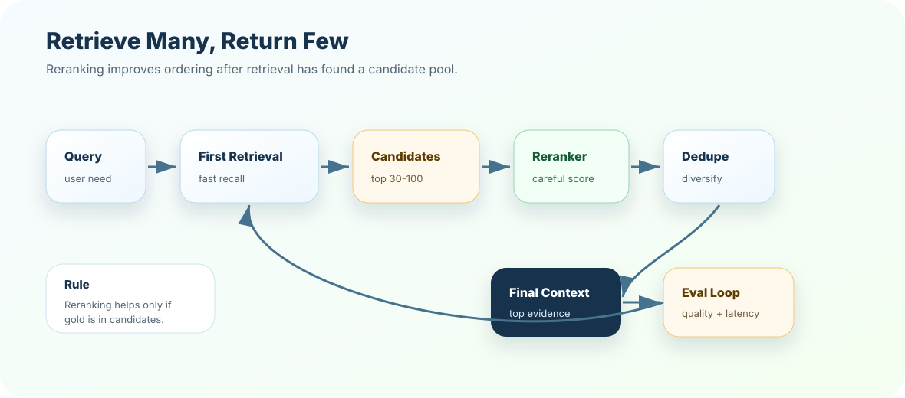

Using reranking to fix missing candidates
Symptom: reranker cannot promote gold evidence because it never received it.
Better move: improve first-stage retrieval or candidate k.
First-stage retrieval is built for speed and recall. Reranking is built for judgment. In production RAG, a common pattern is retrieve many candidates, rerank carefully, and return only the strongest evidence to the prompt.
Imagine a vector search returns 30 chunks. The correct answer is there, but it sits at rank 11. If your prompt only receives the top 5, the model still misses the answer. A reranker can inspect the query and candidate chunks more carefully, move the strongest evidence upward, and reduce context noise.
Reranking should be justified by measured gains in gold rank, citation support, and answer quality.
Use dense, sparse, hybrid, or multi-query retrieval to build a candidate pool.
Score query-candidate relevance with a stronger model or rule set.
Choose final chunks by relevance, diversity, token budget, and citation quality.
Measure Recall@candidate_k, MRR, gold rank, latency, and answer groundedness.
First-stage retrieval is like collecting resumes from a big job board. You want a wide enough pool so strong candidates are not missed. Reranking is the hiring panel reading the shortlist carefully and deciding who truly fits the role.
If the right candidate never enters the shortlist, the panel cannot choose them. If the shortlist is too big, the panel becomes slow and expensive. The art is choosing the right candidate pool size.
First-stage retrieval should usually optimize for recall and speed. It may use vector search, BM25, hybrid search, query rewriting, or multi-query retrieval.
The larger pool sent to reranking, such as 30, 50, or 100 candidates.
The smaller set sent to the prompt, such as 4, 6, or 8 chunks.
Does the gold evidence appear in the candidate pool before reranking?
A reranker takes the query and candidate chunks and returns a new relevance order. Some rerankers are neural models; others are rule-based or weighted scoring systems.
query
-> retrieve top 40 candidates
-> rerank 40 candidates
-> dedupe and diversify
-> send top 6 to context
-> answer with citationsA bi-encoder embeds query and documents separately, which is fast for search. A cross-encoder reads the query and candidate text together, which is slower but often more precise.
Great for first-stage retrieval across large collections.
Great for reranking a smaller candidate set.
More careful scoring costs more runtime.
Rerank candidates, not the whole corpus.

collect failure trace
-> label miss
-> inspect candidate pool
-> tune retrieval or reranking
-> run golden queries
-> compare quality + latency
-> release or roll backOptimization is not "turn on reranking." It is repeated measurement across failure types: missing evidence, wrong order, duplicates, stale chunks, access-filter misses, and context overflow.
Reranking can be expensive because every candidate may require a query-chunk relevance score. Candidate pool size matters.
Fast but may miss gold evidence if candidate recall is low.
Higher recall opportunity but more latency and cost.
Often too expensive unless offline, batch, or high-value workflow.
Candidate Recall@k, gold candidate presence, duplicate rate, stale-hit rate.
MRR, gold final rank, final Recall@k, context precision, citation support.
Rerank latency, cost per query, timeout rate, fallback rate, and token savings.
A strong answer sounds like this: "Reranking is a second-stage retrieval step. I first retrieve a broader candidate pool for recall, then rerank candidates with a stronger relevance model, dedupe, and send a smaller context set to the prompt. I measure candidate recall before rerank and final rank/citation support after rerank, while watching latency and cost."
Design a reranking policy for three flows: low-risk FAQ, high-risk policy answer, and Sev1 runbook. Define candidate k, final k, reranker use, fallback, latency budget, and metrics.
Next, test reranking judgment in the quiz, then build a reranking policy planner in exercises and project.